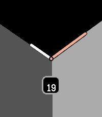
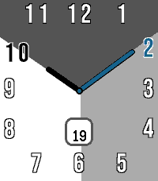
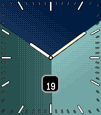
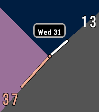
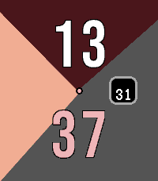
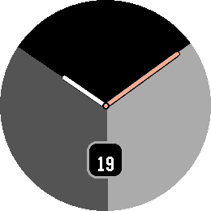
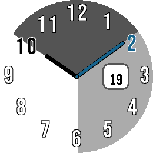
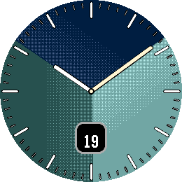
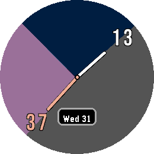
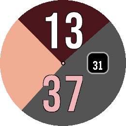

TrioWay · Store asset suite
Five native captures per watch, covering every face type. Files are numbered in suggested upload order.
Download upload ZIP · Capture manifest
New banner · 720 × 320

Generated promotional artwork. The screenshots below are unmodified emulator captures.
Pebble Time 2

01 analogue classic gold10:09 · Flat
02 numerals porcelain blue10:09 · Flat
03 marks lagoon texture10:09 · Texture
04 hybrid dusk13:37 · Flat
05 large digital ember13:37 · FlatPebble Round 2

01 analogue classic gold10:09 · Flat
02 numerals porcelain blue10:09 · Flat
03 marks lagoon texture10:09 · Texture
04 hybrid dusk13:37 · Flat
05 large digital ember13:37 · Flat